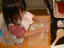
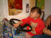
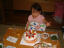
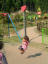
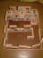
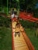

2001年11月3日 13時05分撮影
ママと一緒に「ゴマせんべい」を作っています＜コネコネ・・・＞。
このゴマせんべいは、合唱団のおばさんたちに教えてもらいました。2001年10月14日 9時17分撮影
とっても可愛いアヒルサンバの衣装。オシリにはポンポンがついていて
ママは感動しました。先生方、、、、お疲れさまでした！2001年10月14日 8時38分撮影
運動会での行進。お友達とお手々をつないで、イチ・ニ・サン・シ！
2001年10月10日 11時23分撮影
今日は由起子の３歳のお誕生日。大好きなジャスコのキッズランドへ。
いつもは１つしか乗れないけれど、今日は特別：６つも乗りました。
2001年10月8日 17時49分撮影
パパんちの実家で、由起子のお誕生会。大喜びです。うれしいね。2001年10月7日 14時29分撮影
アスレチック最終地点では、ゆすって動くジャングルジムのような
遊具に必死でしがみ付いています。楽しかったねぇ〜♪
2001年10月7日 13時55分撮影
榛原の公園（２度目の訪問）でアスレチックに夢中。
しっかり綱を握って、上手に移動してゆきます。３回しました。
2001年9月25日 19時26分撮影
由起子が作った将来の我が家。。。パパの部屋、ママの部屋、
由起子の部屋（２階にのぼります）・・・・みんな個室なんですって！2001年9月24日 11時23分撮影
お彼岸なので、お墓参りをしました。マンマンチャンアーン！
2001年9月23日 13時45分撮影
公園内の滑り台を何度も滑りました。
後ろに写っているのはママですが、あんまりお見せできるものでは
ありませんので、パパが思いっきりボカシマシタ。